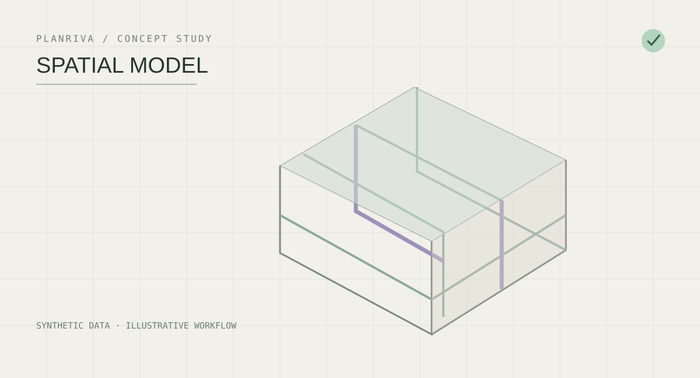
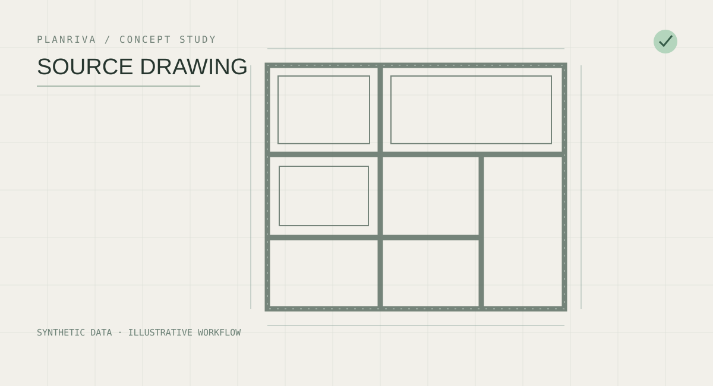
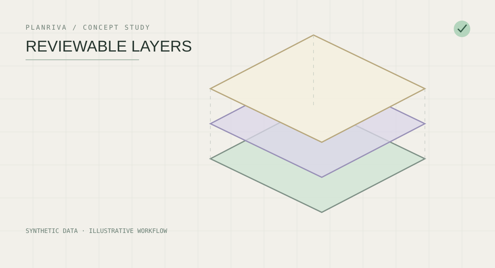

From design intent to documented clarity.
A new approach to architectural workflows: explore source information, review proposed changes, and keep decisions traceable. Built around the way architects actually work.
Explore the approach
From scattered information to decisions you can review.
A proposed workflow designed around professional judgment, not black-box automation.
Start with the project, not a blank screen.
Drawings, specifications and existing models are the starting point. Information remains connected to its source.

Understand what belongs together.
Explore relationships between spaces, elements and project decisions, with context available for review.

Make uncertainty visible.
A proposed change should be understandable before anyone accepts it. Conflicts and missing information deserve attention.
Keep the architect in control.
Review, approve and verify: the design professional remains responsible for decisions and documentation.
Intelligence is useful only when you can trust the process.
Planriva is exploring an Archicad-first, human-in-the-loop approach to technical documentation. The public visuals are illustrative concepts, not a claim of automated production capability.
Built to be tested, not overclaimed.
Early-stage technical validation and workflow research. No commercial traction, production deployment, measured performance improvement or fully automated BIM generation is claimed. Illustrations use synthetic project data.